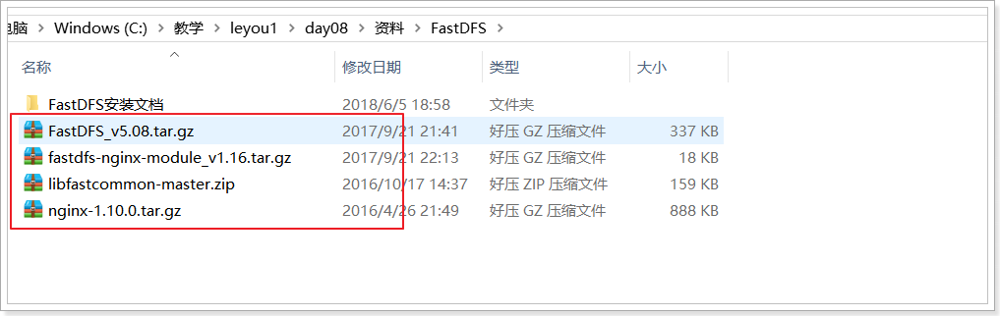
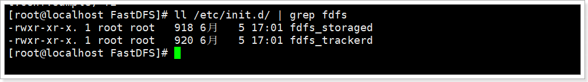
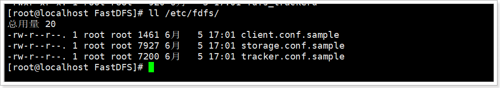
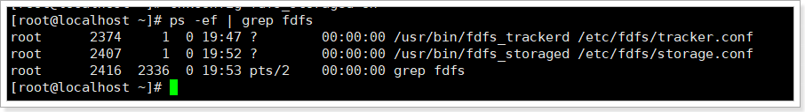
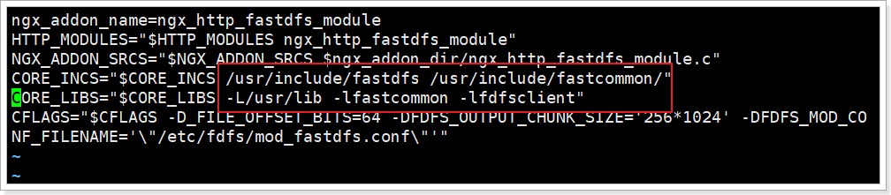
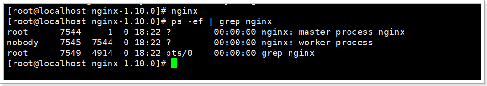

搭建fdfs服务器，踩了无数的坑，以此记录
本教程完全在centos 8上操作！
1.服务器配置
一般而言，都是服务器集群，很少有单机的情况，方便学习，用单机进行模拟。安装服务器不说，只提一提分区
| 分区类型 | 介绍 | 备注 |
|---|---|---|
| /boot | 启动分区 | 一般设置100M-200M，boot目录包含了操作系统的内核和在启动系统过程中所要用到的文件。 |
| / | 根分区 | 所有未指定挂载点的目录都会放到这个挂载点下。 |
| /home | 用户目录 | 一般每个用户100M左右，特殊用途，比如放大文件也可再加上G。分区大小取决于用户多少。对于多用户使用的电脑，建议把/home独立出来，而且还 可以很好地控制普通用户权限等，比如对用户或者用户组实行磁盘配额限制、用户权限访问等。 |
| /tmp | 临时文件 | 一般设置1-5G，方便加载ISO镜像文件使用，对于多用户系统或者网络服务器来也有独立挂载的必要。临时文件目录，也是最常出现问题的目录之一。 |
| /usr | 文件系统 | 一般设置要3-15G，大部分的用户安装的软件程序都在这里。就像是Windows目录和Program Files目录。很多Linux家族系统有时还会把/usr/local单独作为挂载点使用。 |
| /var | 可变数据目录 | 包含系统运行时要改变的数据。通常这些数据所在的目录的大小是要经常变化的，系统日志记录也在/var/log下。一般多用户系统或者网络服务器要建立这个分区，设立这个分区，对系统日志的维护很有帮助。一般设置2-3G大小，也可以把硬盘余下空间全部分为var。 |
| /srv | 系统服务目录 | 用来存放service服务启动所需的文件资料目录，不常改变。 |
| /opt | 附加应用程序 | 存放可选的安装文件，个人一般把自己下载的软件资料存在里面，比如Office、QQ等等。 |
| swap | 交换分区 | 一般为内存2倍，最大指定2G即可 |
| 以下为其它常用的分区挂载点 | ||
| /bin | 二进制可执行目录 | 存放二进制可执行程序，里面的程序可以直接通过命令行调用，而不需要进入程序所在的文件夹。 |
| /sbin | 系统管理员命令存放目录 | 存放标准系统管理员文件 |
| /dev | 存放设备文件 | 驱动文件等 |
| … | 不再介绍… |
对于GUI而言
- /boot 100M 存放启动Linux系统所必需的文件，包括内核文件、启动菜单配置文件等
- / 2G 系统根目录
- /tmp 4G 存放系统运行过程中使用的一些临时文
- /swap 2G 交换文件系统（一般为物理内存的1.5到2倍，必须独立分区，物理内存大于8G可以不设这个交换分区）
- /usr 4G 这是最宏大地目录，要用到地应用程序和文件都寄存在这个目录下。
- /var 4G 存放系统中经常需要变化的一些文件（如系统日志文件、用户邮箱目录等），常常被修改地目录能够放在这个目录下（其中系统地日志文件就在/var/log目录中）
- /opt余下的空间 存放第三方软件程序和工具
对于服务器而言
- /swap 2G 交换文件系统
- /boot 100M
- /var 50%
- /usr 30%
- / 其他空间
2.准备环境
准备如下 tar 包：
| 依赖 |
|---|
| fastdfs-6.06.tar.gz |
| libfastcommon-1.0.43.tar.gz |
| fastdfs-nginx-module-1.22.tar.gz |
| nginx-1.17.7.tar.gz |
下载地址：
fastdfs-nginx-module，libfastcommon，fastdfs
1、使用 wget 命令下载压缩包，如果没有 wget 命令使用 yum 命令安装
yum install wget
2、下载 fastdfs
wget -c "https://github.com/happyfish100/fastdfs/archive/V6.06.tar.gz" \
-O fastdfs-6.06.tar.gz
3、下载 libfastcommon
wget -c "https://github.com/happyfish100/libfastcommon/archive/V1.0.43.tar.gz" \
-O libfastcommon-1.0.43.tar.gz
4、下载 fastdfs-nginx-module
wget -c "https://github.com/happyfish100/fastdfs-nginx-module/archive/V1.22.tar.gz" \
-O fastdfs-nginx-module-1.22.tar.gz
5、下载 nginx
wget -c http://nginx.org/download/nginx-1.17.7.tar.gz
6、安装编译工具及库文件
yum -y install make zlib zlib-devel gcc-c++ libtool openssl openssl-devel
7、测试环境关闭防火墙
systemctl stop firewalld.service
8、开机禁用防火墙
systemctl disable firewalld.service
9、查看防火墙状态
firewall-cmd --state
3.解压并编译安装
3.1.解压下载好的包
tar -zxvf fastdfs-6.06.tar.gz
tar -zxvf fastdfs-nginx-module-1.22.tar.gz
tar -zxvf libfastcommon-1.0.43.tar.gz
tar -zxvf nginx-1.17.7.tar.gz
3.2.编译安装
3.2.1.编译安装 libfastcommon
1、进入解压后的目录
cd /root/download/libfastcommon-1.0.43
2、编译安装
./make.sh && ./make.sh install
3、检查
ls /usr/lib64|grep libfastcommon
ls /usr/lib|grep libfastcommon
出现libfastcommon.so即成功
3.2.2.编译安装 fastdfs
1、进入解压后的目录
cd /root/download/fastdfs-6.06
2、编译安装
./make.sh && ./make.sh install
3、检查
ls /usr/bin|grep fdfs
4、启用配置文件
cd /etc/fdfs/
cp storage.conf.sample storage.conf
cp client.conf.sample client.conf
cp tracker.conf.sample tracker.conf
mkdir -p /fastdfs/tracker
5、修改 tracker.conf 文件
vi /etc/fdfs/tracker.conf
base_path = /fastdfs/tracker
6、启动 tracker 服务
/etc/init.d/fdfs_trackerd start
7、检查服务是否启动
ps -ef|grep fdfs`
8、修改 storage.conf 文件
vi /etc/fdfs/storage.conf
base_path = /fastdfs/storage store_path0 = /fastdfs/storage
tracker_server = 192.168.0.154:22122
http.server_port = 80
9、创建目录
mkdir -p /fastdfs/storage
10、启动 storage 服务
/etc/init.d/fdfs_storaged start
11、设置开机启动
vi /etc/rc.d/rc.local
加入配置
/etc/init.d/fdfs_trackerd start
/etc/init.d/fdfs_storaged start
12、编辑 client.conf 文件
vi /etc/fdfs/client.conf
修改
base_path=/fastdfs/tracker
tracker_server=192.168.0.154:22122
3.3.3.安装 nginx 和 fastdfs-nginx-module
1、安装pcre
yum -y install pcre pcre-devel
2、进入解压目录
cd /root/download/nginx-1.17.7
3、添加 http_stub_status_module 模块
./configure --prefix=/usr/local/nginx --with-http_stub_status_module
4、进入 /root/download/fastdfs-nginx-module-1.22/src/
cd /root/download/fastdfs-nginx-module-1.22/src/
5、编辑配置文件
vi config
6、将config文件中的/usr/local替换成/usr
:%s+/usr/local+/usr
7、进入 nginx 解压目录
cd /root/download/nginx-1.17.7
8、添加fastdfs-nginx-module
./configure --add-module=/root/download/fastdfs-nginx-module-1.22/src/
9、编译安装
make && make install
10、复制并修改fastdfs-ngin-module中的配置文件
cp /root/download/fastdfs-nginx-module-1.22/src/mod_fastdfs.conf /etc/fdfs/
vi /etc/fdfs/mod_fastdfs.conf
修改配置
connect_timeout=10
tracker_server=192.168.0.154:22122
url_have_group_name = true
store_path0=/fastdfs/storage
11、进入fastdfd源码conf目录
cd /root/download/fastdfs-6.06/conf/
11、将http.conf，mime.types两个文件拷贝到/etc/fdfs/目录下
cp http.conf mime.types /etc/fdfs/
12、创建一个软连接，在/fastdfs/storage文件存储目录下创建软连接，将其链接到实际存放数据 的目录
ln -s /fastdfs/storage/data/ /fastdfs/storage/data/M00
13、编辑 nginx 配置
vi /usr/local/nginx/conf/nginx.conf
修改配置
server {
listen 80;
server_name 192.168.0.154;
location ~/group([0-9])/M00 {
root /fastdfs/storage/data;
ngx_fastdfs_module;
}
}
14、启动 nginx
/usr/local/nginx/sbin/nginx
1.Linux下使用FastDFS
本教程所有操作均在CentOS 6.x环境下进行。
将课前资料中的所需文件，上传到/usr/local/leyou目录下：

1.1.单节点FastDFS
整个安装过程非常复杂，很容易出错，建议进行多次备份。
我们这里不打算安装多台虚拟机，因此会把tracker和storage都安装在一起。
1.1.1.安装gcc
GCC用来对C语言代码进行编译运行，使用yum命令安装：
yum -y install gcc
后面会用到解压命令（unzip），所以这里可以用yum把unzip 也装一下
yum install -y unzip zip
1.1.2.安装libevent
yum -y install libevent
1.1.3.安装libfastcommon-master
解压刚刚上传的libfastcommon-master.zip
unzip libfastcommon-master.zip
进入解压完成的目录
cd libfastcommon-master
编译并且安装：
./make.sh
./make.sh install
1.1.4.安装fastdfs
tar -zxvf FastDFS_v5.08.tar.gz
cd FastDFS
./make.sh
./make.sh install
如果安装成功，会看到/etc/init.d/下看到提供的脚本文件：
ll /etc/init.d/ | grep fdfs

fdfs_trackerd是tracker启动脚本fdfs_storaged是storage启动脚本
能够在 /etc/fdfs/ 目录下看到默认的配置文件模板：
ll /etc/fdfs/

tarcker.conf.sample是tracker的配置文件模板storage.conf.sample是storage的配置文件模板client.conf.sample是客户端的配置文件模板
1.1.5.配置并启动tracker服务
FastDFS的tracker和storage在刚刚的安装过程中，都已经被安装了，因此我们安装这两种角色的方式是一样的。不同的是，两种需要不同的配置文件。
我们要启动tracker，就修改刚刚看到的tarcker.conf，并且启动fdfs_trackerd脚本即可。
1）首先将模板文件复制
cp /etc/fdfs/tracker.conf.sample /etc/fdfs/tracker.conf
2）修改复制后的配置文件：
vim /etc/fdfs/tracker.conf
# 修改的内容如下：
base_path=/leyou/tracker # 存储日志和数据的根目录
3）新建目录：
mkdir -p /leyou/tracker
注意：关闭防火墙：
chkconfig iptables off
4）启动和停止
启动tracker服务器: /etc/init.d/fdfs_trackerd start
停止tracker服务器: /etc/init.d/fdfs_trackerd stop
不过安装过程中，fdfs已经被设置为系统服务，我们可以采用熟悉的服务启动方式：
service fdfs_trackerd start # 启动fdfs_trackerd服务，停止用stop
检查FastDFS Tracker Server是否启动成功：
ps -ef | grep fdfs_trackerd
设置tracker服务开机启动:
chkconfig fdfs_trackerd on
1.1.6.配置并启动storage服务
1）首先将模板文件复制
cp /etc/fdfs/storage.conf.sample /etc/fdfs/storage.conf
2）修改复制后的配置文件：
vim /etc/fdfs/storage.conf
# 修改的内容如下:
base_path=/leyou/storage # 数据和日志文件存储根目录
store_path0=/leyou/storage # 第一个存储目录
tracker_server=192.168.56.101:22122 # tracker服务器IP和端口
3）新建目录：
mkdir -p /leyou/storage
注意关闭防火墙： chkconfig iptables off
4）启动和停止
启动storage服务器：/etc/init.d/fdfs_storaged start
停止storage服务器：/etc/init.d/fdfs_storaged stop
推荐使用：
service fdfs_storaged start # 启动fdfs_storaged服务，停止用stop
设置storage服务开机启动：
chkconfig fdfs_storaged on
ps -ef | grep fdfs

2.使用nginx访问FastDFS
2.1.为什么需要用Nginx访问？
FastDFS通过Tracker服务器,将文件放在Storage服务器存储，但是同组存储服务器之间需要进入文件复制，有同步延迟的问题。
假设Tracker服务器将文件上传到了192.168.4.125，上传成功后文件ID已经返回给客户端。此时FastDFS存储集群机制会将这个文件同步到同组存储192.168.4.126，在文件还没有复制完成的情况下，客户端如果用这个文件ID在192.168.4.126上取文件,就会出现文件无法访问的错误。
而fastdfs-nginx-module可以重定向文件连接到文件上传时的源服务器取文件,避免客户端由于复制延迟导致的文件无法访问错误
2.2.安装fastdfs-nginx-module
2.2.1.解压
tar -zxvf fastdfs-nginx-module_v1.16.tar.gz
2.2.2.修改config
1）进入src目录
cd fastdfs-nginx-module/src/
2）编辑config
vim config
使用以下底行命令：
:%s+/usr/local/+/usr/+g
将所有的/usr/local替换为 /usr，这个才是正确的目录:

2.2.3.配置nginx与FastDFS关联配置文件
复制 fastdfs-nginx-module 源码中的配置文件到/etc/fdfs 目录， 并修改
cp /usr/local/leyou/fastdfs-nginx-module/src/mod_fastdfs.conf /etc/fdfs/
vi /etc/fdfs/mod_fastdfs.conf
修改以下配置：
connect_timeout=10 # 客户端访问文件连接超时时长（单位：秒）
tracker_server=192.168.56.101:22122 # tracker服务IP和端口
url_have_group_name=true # 访问链接前缀加上组名
store_path0=/leyou/storage # 文件存储路径
复制 FastDFS 的部分配置文件到/etc/fdfs 目录
cd /usr/local/leyou/FastDFS/conf/
cp http.conf mime.types /etc/fdfs/
2.3.安装Nginx的插件
2.3.1.如果没有安装过nginx
- 安装nginx的依赖库
yum -y install gcc pcre pcre-devel zlib zlib-devel openssl openssl-devel
- 解压安装包
tar -zxvf nginx-1.10.0.tar.gz
- 配置nginx安装包，并指定fastdfs-nginx-model
cd nginx-1.10.0
./configure --prefix=/opt/nginx --sbin-path=/usr/bin/nginx --add-module=/usr/local/leyou/fastdfs-nginx-module/src
注意：在执行./configure配置nginx参数的时候，需要将fastdfs-nginx-moudle源码作为模块编译进去。
- 编译并安装
make && make install
2.3.2.如果已经安装过nginx
1） 进入nginx目录：
cd /usr/local/leyou/nginx-1.10.0/
2） 配置FastDFS 模块
./configure --prefix=/opt/nginx --sbin-path=/usr/bin/nginx --add-module=/usr/local/leyou/fastdfs-nginx-module/src
注意：这次配置时，要添加fastdfs-nginx-moudle模块
3） 编译，注意，这次不要安装（install）
make
4） 替换nginx二进制文件:
备份：
mv /usr/bin/nginx /usr/bin/nginx-bak
用新编译的nginx启动文件替代原来的：
cp objs/nginx /usr/bin/
2.3.3.启动nginx
配置nginx整合fastdfs-module模块
我们需要修改nginx配置文件，在/opt/nginx/config/nginx.conf文件中：
vim /opt/nginx/conf/nginx.conf
将文件中，原来的server 80{ ...} 部分代码替换为如下代码：
server {
listen 80;
server_name image.leyou.com;
# 监听域名中带有group的，交给FastDFS模块处理
location ~/group([0-9])/ {
ngx_fastdfs_module;
}
location / {
root html;
index index.html index.htm;
}
error_page 500 502 503 504 /50x.html;
location = /50x.html {
root html;
}
}
启动nginx：
nginx # 启动nginx
nginx -s stop # 停止nginx
nginx -s reload # 重新载入配置文件
# 可通过ps -ef | grep nginx查看nginx是否已启动成功

2.3.4.设置nginx开机启动
创建一个开机启动的脚本：
vim /etc/init.d/nginx
添加以下内容：
#!/bin/sh
#
# nginx - this script starts and stops the nginx daemon
#
# chkconfig: - 85 15
# description: NGINX is an HTTP(S) server, HTTP(S) reverse \
# proxy and IMAP/POP3 proxy server
# processname: nginx
# config: /etc/nginx/nginx.conf
# config: /etc/sysconfig/nginx
# pidfile: /var/run/nginx.pid
# Source function library.
. /etc/rc.d/init.d/functions
# Source networking configuration.
. /etc/sysconfig/network
# Check that networking is up.
[ "$NETWORKING" = "no" ] && exit 0
nginx="/usr/bin/nginx"
prog=$(basename $nginx)
NGINX_CONF_FILE="/opt/nginx/conf/nginx.conf"
[ -f /etc/sysconfig/nginx ] && . /etc/sysconfig/nginx
lockfile=/var/lock/subsys/nginx
make_dirs() {
# make required directories
user=`$nginx -V 2>&1 | grep "configure arguments:.*--user=" | sed 's/[^*]*--user=\([^ ]*\).*/\1/g' -`
if [ -n "$user" ]; then
if [ -z "`grep $user /etc/passwd`" ]; then
useradd -M -s /bin/nologin $user
fi
options=`$nginx -V 2>&1 | grep 'configure arguments:'`
for opt in $options; do
if [ `echo $opt | grep '.*-temp-path'` ]; then
value=`echo $opt | cut -d "=" -f 2`
if [ ! -d "$value" ]; then
# echo "creating" $value
mkdir -p $value && chown -R $user $value
fi
fi
done
fi
}
start() {
[ -x $nginx ] || exit 5
[ -f $NGINX_CONF_FILE ] || exit 6
make_dirs
echo -n $"Starting $prog: "
daemon $nginx -c $NGINX_CONF_FILE
retval=$?
echo
[ $retval -eq 0 ] && touch $lockfile
return $retval
}
stop() {
echo -n $"Stopping $prog: "
killproc $prog -QUIT
retval=$?
echo
[ $retval -eq 0 ] && rm -f $lockfile
return $retval
}
restart() {
configtest || return $?
stop
sleep 1
start
}
reload() {
configtest || return $?
echo -n $"Reloading $prog: "
killproc $nginx -HUP
RETVAL=$?
echo
}
force_reload() {
restart
}
configtest() {
$nginx -t -c $NGINX_CONF_FILE
}
rh_status() {
status $prog
}
rh_status_q() {
rh_status >/dev/null 2>&1
}
case "$1" in
start)
rh_status_q && exit 0
$1
;;
stop)
rh_status_q || exit 0
$1
;;
restart|configtest)
$1
;;
reload)
rh_status_q || exit 7
$1
;;
force-reload)
force_reload
;;
status)
rh_status
;;
condrestart|try-restart)
rh_status_q || exit 0
;;
*)
echo $"Usage: $0 {start|stop|status|restart|condrestart|try-restart|reload|force-reload|configtest}"
exit 2
esac
修改文件权限，并加入服务列表
# 修改权限
chmod 777 /etc/init.d/nginx
# 添加到服务列表
chkconfig --add /etc/init.d/nginx
设置开机启动
chkconfig nginx on